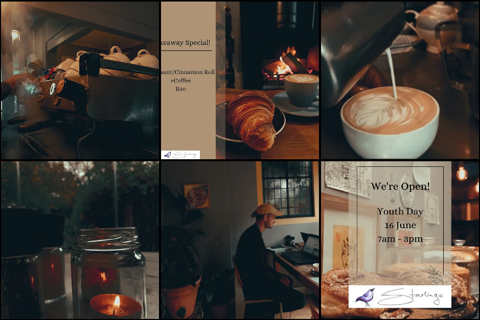
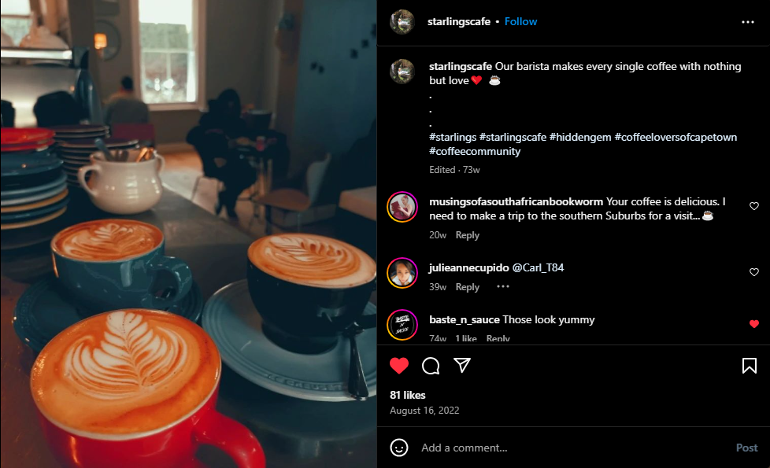

Social Media

All the pictures you're seeing was shot and edited by me using Canva.
During the time I shot these images It was winter and I tried to keep that warm winter theme. I planned all posts ahead of time with a cocntent calender I created on excel. 
I was responsible for communicating with customers on instagram and facebook, Any questions they add I would reply to.